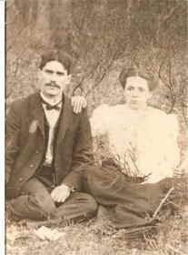

Wesley Matthew McKinney
15 September 1881 – 21 September 1966
Quick Facts
Immediate Family
Parents
Allen Marshall McKinney SUPPORTEDMargaret Basham SUPPORTED
Wesley was one of 19 children of Allen McKinney.
Children
Dallas Cecil McKinney (born 8 December 1904; died 1 December 1958; married Laverne Hurt) DOCUMENTEDMarcil Dare McKinney (born 8 December 1904; twin of Dallas) SUPPORTED
Garnet Dare McKinney (born 13 September 1908; died 1992; married Otis Butler) SUPPORTED
Dorothy Dare McKinney (born 3 November 1910; died 2008; married Shermin Smith) SUPPORTED
Clynis Dare McKinney (born about 1912; died 1995) SUPPORTED
Thelma Dare McKinney (born about 1914; died 1982; married Cy Adams and later Bill Fox) SUPPORTED
Leonard Oxley McKinney (born 1916; married Margaret Hanning) SUPPORTED
Wesley Arthur McKinney (born 1918; died 2003; married Rosalia Massey) SUPPORTED
Allen Joseph McKinney (born 1920; died 2007; married Naomi) SUPPORTED
Forest Oliver McKinney (born about 1923; died 2008; married Shirley Legg) SUPPORTED
Roster follows the family couple profile. Geni links an 11th child, Wilma J McKinney, who appears in neither the couple profile nor Tricia's Ancestry tree; she is not carried here pending a ruling. Tricia's tree replaces Marcil with Maysel McKinney (1907–1982) in the twin slot and lists no Marcil — see Research Notes. All five daughters share the middle name Dare; its origin is unknown. Spouses for the younger children are compiled, not record-proved.
On Family Tree Sites
Life Timeline
15 September 1881 · age 0
Born, Basin, Wyoming County, West Virginia DOCUMENTED
11 October 1900 · age 19
Married Genettie Ellen Canaday at her father William J. Canaday's home, Raleigh County, by minister James C. Thompson DOCUMENTED
1904–1923 · ages 23–42
Ten children born: Dallas, Marcil, Garnet, Dorothy, Clynis, Thelma, Leonard, Wesley Arthur, Allen, Forest SUPPORTED
12 September 1918 · age 36
Registered for the World War I draft at Beckley: teacher and minister, employer Greenbrier Business College, nearest relative Mrs. Genettie E. McKinney DOCUMENTED (registration is not service)
1942
World War II draft registration recorded at Chelyan, Kanawha County; the card itself has not been pulled SUPPORTED
21 September 1966 · age 85
Died, Phoenix, Maricopa County, Arizona SUPPORTED
Buried
Green Acres Memorial Park, Scottsdale (Garden of Pray) SUPPORTED
Life Story
Wesley Matthew McKinney was born on 15 September 1881 at Basin in Wyoming County, West Virginia, the son of Allen Marshall McKinney and Margaret Basham, and one of Allen's nineteen children. His birth date comes from his birth record and his World War I draft card; his Find a Grave memorial reads 5 September instead.
He married Genettie Ellen Canaday on 11 October 1900 at her father William J. Canaday's home in Raleigh County, the ceremony performed by minister James C. Thompson. His draft card calls him a teacher and minister employed by Greenbrier Business College at Beckley, and census records list him as a teacher; the family lived at Beckley into the 1930s. Wesley and Genettie had ten children, five of them daughters who all share the middle name Dare.
He registered for both world war drafts but no military service is proved. He died on 21 September 1966 at Phoenix, Arizona, and was buried at Green Acres Memorial Park in Scottsdale. No portrait of Wesley alone has been found; the photograph above is the portrait from his memorial.
Photo Gallery

Sources and Evidence
- West Virginia birth record ID 3325243: Wesley Matthew McKinney, born 15 September 1881, Basin, Wyoming County DOCUMENTED
- World War I draft registration card image: registered 12 September 1918, Beckley; born 15 September 1881, age 36; occupation teacher and minister, employer Greenbrier Business College, Beckley; nearest relative Mrs. Genettie E. McKinney; medium height and build, black eyes and hair DOCUMENTED
- West Virginia marriage record ID 11511781: married 11 October 1900, Raleigh County, at William J. Canaday's home, by minister James C. Thompson; bride recorded as "Genetta Ella Canaday" DOCUMENTED
- Find a Grave memorial 67048729, live-verified 4 November 2026: Wesley Matthew McKinney, born 5 September 1881, died 21 September 1966, Phoenix; burial Green Acres Memorial Park, Scottsdale, Garden of Pray SUPPORTED (birth day conflicts with the birth record)
- Geni profile: burial place 401 North Hayden Road, Scottsdale (the Green Acres address); spouse and children links SUPPORTED
- Census records: occupation teacher; family at Beckley into the 1930s SUPPORTED
- FamilySearch: World War II draft registration event, 1942, Chelyan, Kanawha County (card not pulled) SUPPORTED
- Tricia's Ancestry tree: child death years where Geni shows none — Clynis 1995, Thelma 1982, Wesley Arthur 2003, Allen 2007, Forest 2008, Dorothy 2008 SUPPORTED
Grades: DOCUMENTED an original record says it · SUPPORTED several records point to it · FAMILY ACCOUNT the family's own telling · UNPROVED a lead, not proved.
Research Notes and Open Questions
- Birth day: 15 September (birth record, draft card, Geni main field, Tricia's tree) against 5 September (Find a Grave memorial and an old compiled account). The working date is 15 September.
- Spelling: Geni's heading uses "Mathew"; his records spelling is "Matthew," used here. Tricia's tree also uses "Matthew."
- Margaret's name: Geni and Tricia's tree give her as "Margaret Lucinda Basham." The couple profile carries her as Margaret Basham, and the Lucinda form is not used here — it appears to conflate her with Allen's second wife, Lucinda A. Mann, whom Allen married after Margaret died in 1914. Allen's "Reverend" title is family-only.
- Marcil and Maysel: the couple profile and Geni carry Marcil Dare, twin of Dallas; Tricia's tree has no Marcil and puts Maysel McKinney (1907–1982) in the twin slot instead; FamilySearch splits further into Macil Dara (born 1902) and Maysel Dora (1906–1989). Twin status itself is an open conflict: the 1910 census "Marcel," age 5, supports twins, while the 1920 census "Macil," age 17, contradicts it.
- Dare: all five daughters share the middle name Dare; its origin is unknown. A Virginia Dare "Jenny" Lilly Wills sighting is below 75% and stays a lead only.
- Clynis: gender conflict, unresolved — the 1910 census lists a daughter, the 1920 and 1930 censuses list a son. Both are noted; the page keeps the couple profile's "Clynis Dare" against Tricia's tree spelling "Clennis."
- Child conflicts carried open: Dorothy's birthplace Bertha (birth record) against Walker, Wood County (Tricia's tree); Allen's birth day 7 March (compiled) against 27 March (tree); Leonard's birth 1916 (birth record) against about 1917 (tree); Thelma's birth about 1914 (compiled 4 October 1914) against about 1915 (tree); Forest's birth about 1923 (compiled 9 February 1923) against about 1922 (tree); Leonard's surname spelled "Mckenny" and Forest spelled "Forrest" in the tree.
- Child death years from Tricia's tree where Geni shows none (Clynis 1995, Thelma 1982, Wesley Arthur 2003, Allen 2007, Forest 2008, Dorothy 2008) are tree-only, not record-level.
- Wesley siblings not carried: Geni lists 19 siblings for Wesley, but the couple profile says Allen had 19 children in total, and places Joseph Floyd McKinney as Allen's brother, not Wesley's sibling — yet Geni lists Joseph Floyd among Wesley's siblings. A click-verification pass also found the sibling IDs in that Geni report belonged to a dead ID block, not live profiles. The sibling list is not carried until it is verified.
- Wilma J: Geni links an 11th child, Wilma J McKinney, who appears in neither the couple profile nor Tricia's tree. She is not carried here pending a ruling.
- Open: when and why the family moved to Phoenix; ministry specifics are family lore only; "Greenbrier Business College" is unbacked as an institution. Registration for either draft is not service.
- MyHeritage: a profile was verified on 21 October 2026 but its URL was not filed, so no tile is shown.
- No portrait of Wesley alone has been found; the memorial portrait above shows him with another person, unnamed here. Place photographs in the couple folder (cabin interior, cemetery overviews, courthouse preview) are not shown on this page.
Profile history: Created 4 November 2026 from the family couple profile and research notes.